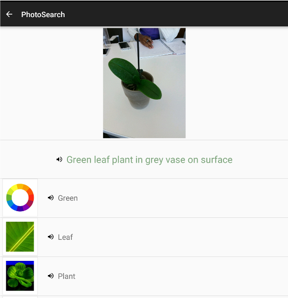
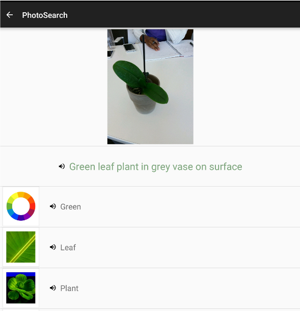

OrderEat: People with Aphasia Dinning in Restaurants
This project uses context-awareness to retrieve restaurant menus from the Internet and associates words in the menu with images in real-time.

MenuSpeak: People with Aphasia Dinning in Restaurants
MenuSpeak allows user the to take a photo of a paper menu. The text on the menus are recognized. The can then be tapped on to be sounded out and photos of the text is displayed.
 

PhotoSearch
Users take photos of scenes or items in the environment, the photos are tagged in real-time, the tags are then associated with images and audio in real-time.


Block-based Programming for Children With Visual Impairments
Collaborators: Kira Furuichi, Melissa Perez. In this project we explore ways to make block based programming more accessible to children who have visual impairments. We implement a simple prototype that make use of audio feedback, speech recognition and physical blocks. We focus particularly on teaching children about conditional controls.Use audio commands to select blocks for a program here.


Grad School Predictor
Collaborators: Corinna Wendish, Eureka Foong. Grad school predictor is a machine learning system that used data from gradCafe to build a model with weka. The model attempts to predict whether an applicant will be admitted into graduate school. It uses applicants' GRE scores, GPAs and the programs being applied to as features to predict acceptance or rejection. See details about the machine learning model here and try out the model here.
Space Princess
Collaborators: Jim Maddock and Kit Martin. A unity 3D game based on UniteEurope's 2016 training day example. Try it here.